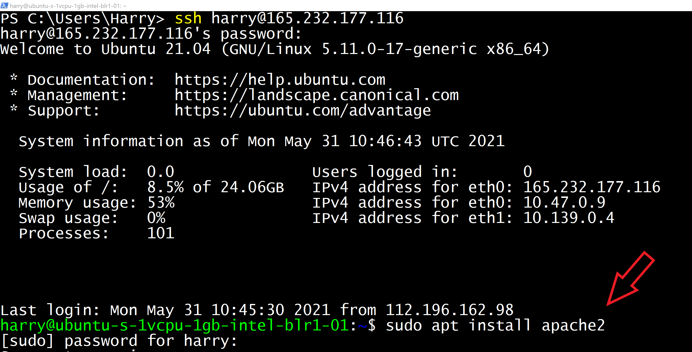
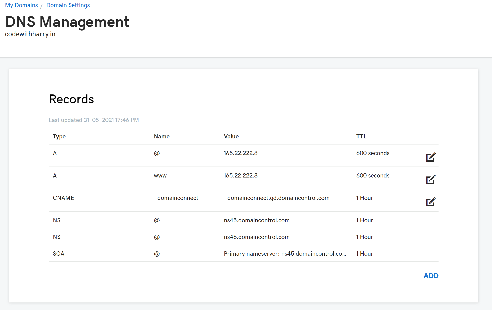
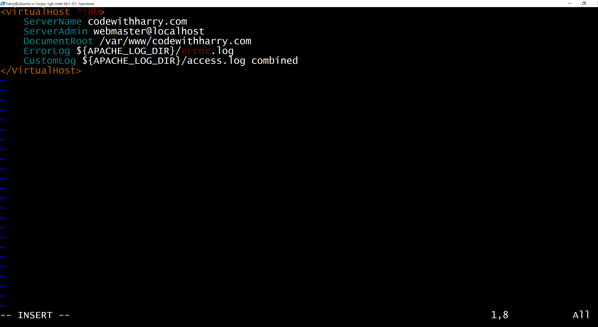
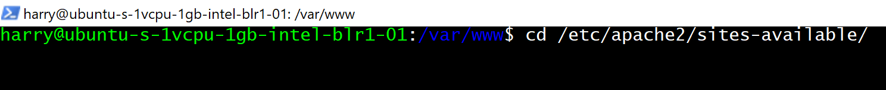
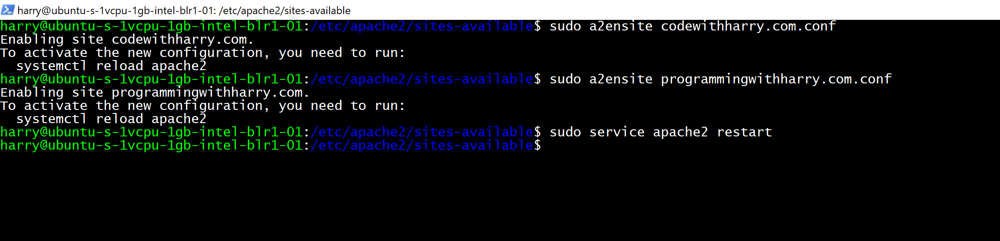

An apache2 web server provides robustness and scalability for hosting multiple websites on your Ubuntu VPS. This means you can utilize the power of your VPS hardware without any downtime on your website.
We can configure apache2 to host multiple websites on the same VPS. To achieve this using apache, we create virtual hosts corresponding to each domain or individual site. A virtual host is a way to direct traffic corresponding to an IP to a specific directory on our VPS. This way we will be able to host multiple websites on a single Ubuntu server.
If you haven't already installed apache2, you can do so by entering the below command in the ubuntu terminal
sudo apt install apache2
Assuming you have apache2 installed on your machine, all you need to do now is to follow the steps outlined in the next section to host multiple websites. For the sake of this tutorial, I will assume that we have to host 2 websites codewithharry.com and programmingwithharry.com on our ubuntu VPS. We will point the domains to the IP address of our droplets. Here is how A record is set up in GoDaddy.
The process is pretty similar for other domain providers
Let's set up our virtual hosts now
Let's create individual directories to store the contents of codewithharry.com and programmingwithharry.com. Execute the commands below to create these directories inside the /var/www folder
sudo mkdir -p /var/www/codewithharry.com/ sudo mkdir -p /var/www/programmingwithharry.com/
Once the codewithharry.com.conf file is created. paste the below contents inside it
<VirtualHost *:80>
ServerName codewithharry.com
ServerAdmin yourPublicEmail@email.com
DocumentRoot /var/www/codewithharry.com
ErrorLog ${APACHE_LOG_DIR}/error.log
CustomLog ${APACHE_LOG_DIR}/access.log combined
</VirtualHost>

Repeat the same for programmingwithharry.com by executing the command below:
vim /etc/apache2/sites-available/programmingwithharry.com.confand paste the below contents:
In order for these virtual host files to function correctly, we need to enable them.
Enter the directory where we have created virtual hosts:
cd /etc/apache2/sites-available/
Execute the following commands to enable the virtual hosts:
sudo a2ensite codewithharry.com.conf sudo a2ensite programmingwithharry.com.conf
Finally, you will have to restart the apache server:
sudo service apache2 restart
Test the configuration of these virtual hosts by visiting your domains. You can configure as many virtual hosts as you want for your domains and this technique can help you power many websites on a single VPS.
Hope this will help you host your websites and save some money on VPS. Happy Coding!